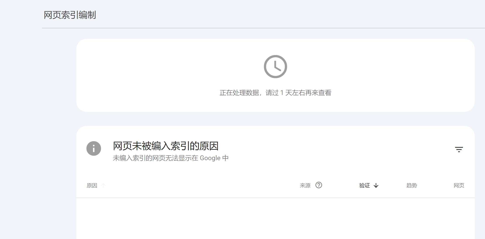
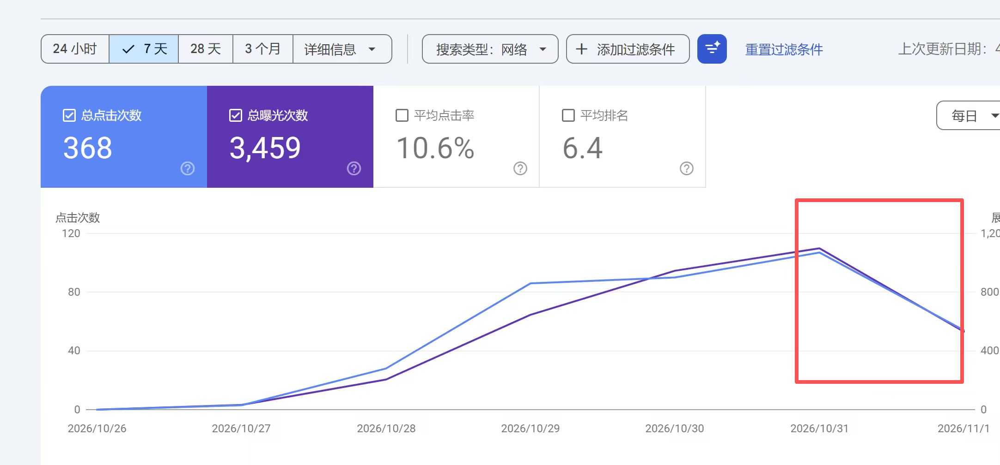

新站提交一周、索引一直不更新，多数情况是谷歌本身的收录延迟，而不是账号被封；群里有人等过最久两周。至于该主动提交 Sitemap 还是等自然收录，答案不是二选一：都做。
索引不更新不等于被封
Search Console 的「网页索引编制」显示「正在处理数据，请过 1 天左右再来查看」时，只说明这批数据还没处理完，不能当作页面被剔除或站点被处罚的证据。判断是否异常，要结合站点是否已有曝光与点击，而不是只盯着这一句提示。

这次的情况是流量已经能看到：superceo 贴出的 7 天数据为 368 次点击、3,459 次曝光，平均点击率 10.6%，平均排名 6.4，曲线在 10 月 31 日之后回落。已有搜索流量说明页面至少被展示过，和整站被封不是一回事。

曲线回落的原因，群里没有给出可以验证的归因。单看一周数据，无法区分正常波动、关键词排名变化和数据处理延迟，因此不能直接得出「被处罚」的结论，需要继续观察更长周期。
谷歌更新慢，最长的等过两周
Skyyyy 的经验是「谷歌更新慢」，自己等过最久 2 周；村长补充「过了新站优待期了」；哥飞直接判断「延迟是正常的」。这些是群友经验，不是官方时限，但足以说明提交一周还没刷新索引并不罕见。
主动提交地图还是等自然收录
superceo 问该主动提交地图还是等自然收录，哥飞的回答是「都做」。提交 Sitemap 是给谷歌一个发现页面的入口，自然收录则取决于抓取与页面质量，两条路径并不互斥，不需要在其中做取舍。
原始对话
聊天记录（12 条）
参与者 4 人：·superceo、Skyyyy、村长、哥飞 · 时间范围 2026年11月3日 21:10 至 2026年11月3日 21:15 · 原始 12 条，保留 12 条